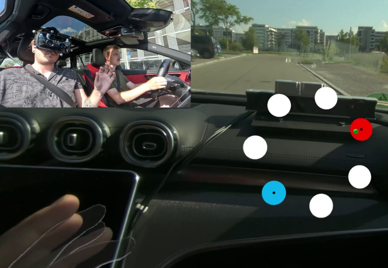

Bumpy Ride?
Understanding the Effects of External Forces on Spatial Interactions in Moving Vehicles
CHI'25
TL;DR: We study how vehicle motion, vibration, and external forces affect spatial interaction performance in moving vehicles, comparing multiple interaction techniques under real-world driving conditions.
Abstract
As the use of head-mounted displays in moving vehicles increases, passengers can immerse themselves in visual experiences independent of their physical environment. However, interaction methods are susceptible to physical motion, leading to input errors and reduced task performance. This work investigates the impact of G-forces, vibrations, and unpredictable maneuvers on 3D interaction methods. We conducted a field study with 24 participants in both stationary and moving vehicles to examine the effects of vehicle motion on four interaction methods: (1) Gaze and Pinch, (2) Direct Touch, (3) Handray, and (4) Head Gaze. Participants performed selections in a Fitts' Law task. Our findings reveal a significant effect of vehicle motion on interaction accuracy and duration across the tested combinations of Interaction Method x Road Type x Curve Type. We found a significant impact of movement on throughput, error rate, and perceived workload. Finally, we propose future research considerations and recommendations on interaction methods during vehicle movement.
